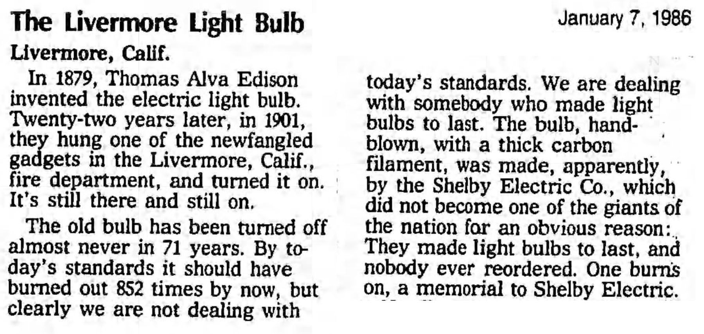
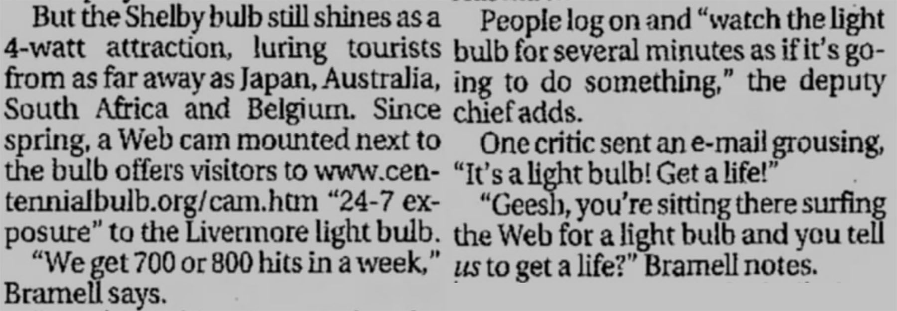
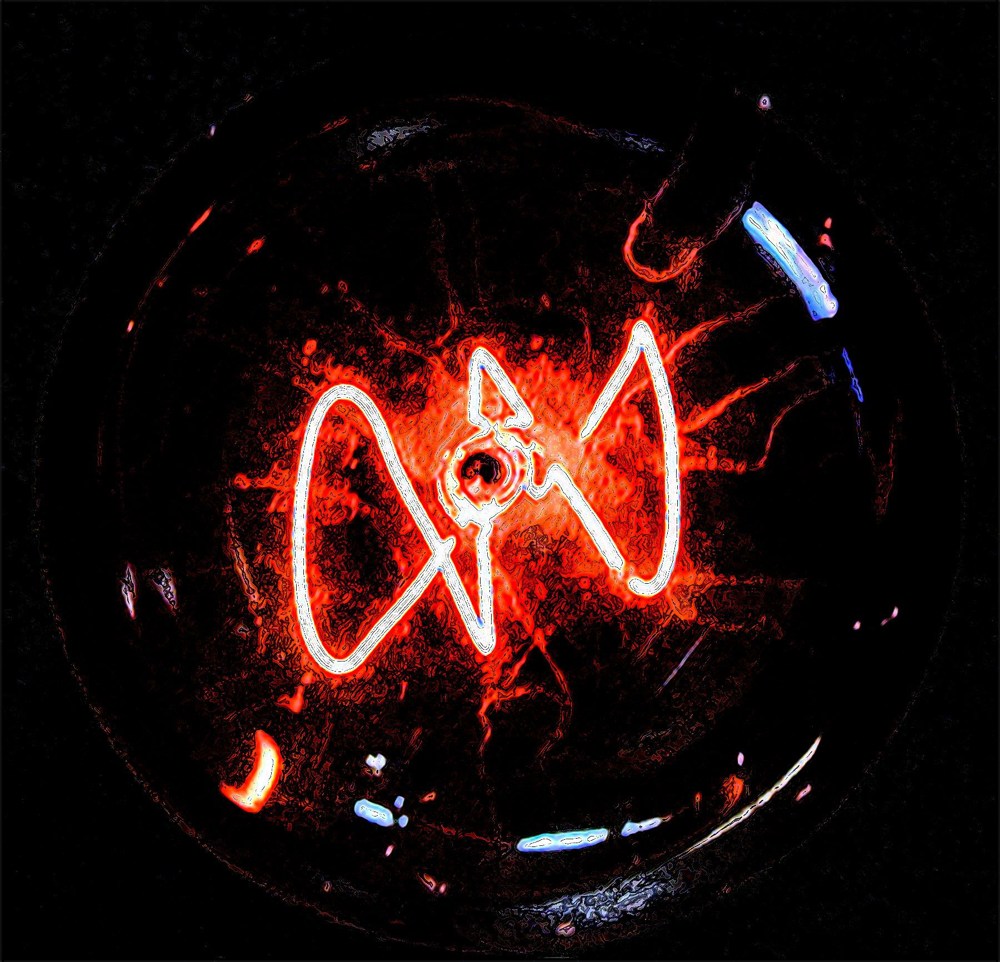

LACRECIA: .
LACRECIA: .
LACRECIA: .
LACRECIA: .
LACRECIA: 어... 미안해요, 잠시만요.
BURGER SPECIALIST intercom: 괜찮습니다! 준비되는 대로만 주문해주세요.
LACRECIA: 고마워요
LACRECIA: .
LACRECIA: .
LACRECIA: .
LACRECIA: .
LACRECIA: .
LACRECIA: .
LACRECIA: 네, 혹시 이거를 주문... 죄송해요, 시간을 다 잡아먹고 있네요.
BURGER SPECIALIST intercom: 아녜요, 괜찮습니다! 뒤에 아무도 없어요.
LACRECIA: 네, 네, 좋아요. 햄버거에는 피클이 들어가 있는 거 같은데, 치킨 샌드위치에는 없는 거 같네요. 제가 피클을 먹고 싶은데, 여기 햄버거들이 좀 구리잖아요.
BURGER SPECIALIST intercom: 아 맞아요, 저희 햄버거들이 겁나 거지같긴 하죠.
LACRECIA: [웃음] 그렇죠? 그리고 제가 도저히 이해가 안 되는 게, 햄버거가 메뉴에 있는 것들 중에서 제일 맛없는 건데 왜 가게 이름이 버거킹인 거죠?
BURGER SPECIALIST intercom: [웃음] 그거 진짜 좋은 질문에요! 진짜 좋네요.
LACRECIA: 왜냐면, 그니까, 여기 감자튀김은 진짜 맛있거든요! 저는 이 집 치킨 샌드위치도 좋아하고, 그리고 아마도 소닉 다음으로 가장 맛있는 모닝 샌드위치도 있고 말예요. 그리고 사실은요, 햄버거에서 패티 자체만 빼고 남은 쪽들은 맛있어요!
BURGER SPECIALIST intercom: 네, 손님도 제가 뭐하는지 아시죠, 점심 식사 시간에, 재료 가지고 햄버거 하나 만드는데 패티만 빼놓아요. 그러면 결국에는 그냥 피클이랑, 토마토랑, 상추랑, 케첩이랑, 마요네즈 들어간 야채 샌드위치인 셈이죠. 게다가 맛있고요!
LACRECIA: 하, 당연히 공짜로 먹겠죠! 또 게다가 패티가 공짜여도 그 쪽은 “어, 싫은데.”하는 거죠
BURGER SPECIALIST intercom: 맞아요, 싫은데! 네, 패티 가지고 지랄하진 않아요.
LACRECIA: 궁금한 게 있어요, 버거킹의 간부 하나가 뭐를 봤는데, 테이블 다리 밑에 붙여서 바닥 안 긁히게 하는 작은 패드들 알죠? 간부 중에 하나가 그거를 보고 그런 거죠, “저거 한 번 먹어보고 싶군.”
BURGER SPECIALIST intercom: [웃음]
LACRECIA: 뭐 음식 맛이 나지는 않겠죠. 게다가 색깔이 맞는 것도 아니고요. 햄버거 고기는 원래 갈색이어야 하는데, 그 놈의 건 회색이죠. 설거지물처럼 보이는 잡것들은 먹고 싶지 않아요. 진짜, 그 쪽이 저한테 거기서 파는 햄버거 패티를 그냥 주더라도, 전 먹지도 않을 거예요. 그냥 돌아 서서 그거 가지고 설거지나 하겠죠.
BURGER SPECIALIST intercom: [웃음] 그만요! 세상에.
LACRECIA: 그니까 잠시만, 이것 좀 빌려서 제 뭣 같은 배의 선체에 붙은 곰팡이나 좀 닦아내야겠습니다.
BURGER SPECIALIST intercom: [웃음]
LACRECIA: 거지같은 15000년이나 지나갔는데 그 쪽 회사는 자기네들이 지은 이름조차 따라가지 못하죠? 그니까, 오해하진 마세요, 제가 무슨 요리사는 아니지만, 항상 길 위에서 다닌다고요, 오랫동안 집밥 같은 거 만들어 먹은 적이 없어요. 그래도 적어도 좆같은 버거 코딱지 같은 게 안 박혀있는 햄버거는 만들 수 있죠
BURGER SPECIALIST intercom: 그 끈적한 거요! 네, 저는 끈적한 거라고 불러요. 패티에 있는 작은 구멍 같은 거 말하시는 거죠, 그렇죠?
LACRECIA: 맞아요! 고기 코딱지로 만들어서 가공육을 만든다니까요! 세상에나, 너무 많아요. 그리고 제가 그걸 먹는다고요?
BURGER SPECIALIST intercom: 구려요. 구리죠, 저도 알아요.
LACRECIA: 미안해요, 아마도 “내 드라이브 스루에 있는 이 아줌마는 대체 뭐하자는 거고 또 누구야?”
BURGER SPECIALIST intercom: 아녜요, 괜찮습니다! 믿어요, 믿어주세요, 지금이 제 하루 중에서 제일 빛나는 때에요.
LACRECIA: 알겠어요, 그럼. 점심. 어. 그거 괜찮을까요.. 그릴 치킨 샌드위치 있는 7번 세트요, 혹시 피클도 넣어주실 수 있나요? 그리고 콜라 대신에, 그냥 물 좀 부탁드릴게요.
BURGER SPECIALIST intercom: 당연하죠, 다른 건 없으신가요?
LACRECIA: 아뇨, 그렇게 주문할게요.
BURGER SPECIALIST intercom: 돈 좀 가지실래요?
LACRECIA: 어어어어어, 사실 필요해요, 그럼 좋죠. 혹시 그 쪽한테 20달러 받을 수 있을까요?
BURGER SPECIALIST intercom: 할 수 있죠. 전부 7.73달러입니다. 그럼 20달러를 빼서, 12.27달러를 드리면 되겠네요.
LACRECIA: 어, 그게 말이죠? 그만큼 잔돈을 많이 갖고 다니고 싶지는 않아서요. 그냥 27.73달러로, 부탁드릴게요.
BURGER SPECIALIST intercom: 그럼요! 그럼 총액에서 빼면, 완벽한 20달러짜리 지폐를 드리면 되겠군요. 그냥 두 번째 창문에서 빼가세요.
LACRECIA: 고마워요!
BURGER SPECIALIST: .
BURGER SPECIALIST: .
BURGER SPECIALIST: .
BURGER SPECIALIST: .
BURGER SPECIALIST: 네, 그럼 손님 20달러 여깄고요...
LACRECIA: 고마워요. 괜찮은 거죠?
BURGER SPECIALIST: 오 네. 서랍장에 몇 백 달러나 있어요, 저흰 괜찮습니다. 그리고 여기에 샌드위치랑 감자튀김도 있고요, 어... 케첩은 봉지에 있고...
BURGER SPECIALIST: ...저기, 손님 그, 어, 어.
BURGER SPECIALIST: 세상에, 알아보겠어요.
BURGER SPECIALIST: 어, 에반스! 에반스, 맞죠?
BURGER SPECIALIST: .
LACRECIA: .
LACRECIA: 그게 접니다.
BURGER SPECIALIST: 미친, 유명한 분이셨네요! 한 오 분 동안이나 같이 얘기하고 있었는데 알아차리지도 못했어요!
LACRECIA: 에이이이, 전 아무도 아녜요. 평범하죠.
BURGER SPECIALIST: 그러면 혹시, 그니까, 경기 중이신 거죠?
LACRECIA: 기술적으론요, 맞아요. 그래도 먹기는 해야죠, 그거 알죠?
BURGER SPECIALIST: 네, 알 거 같아요.
BURGER SPECIALIST: 보니까 이런 데는 게임 500하기에는 좀 기묘한 데 같아요. 공이 보통은 나라 중간 쪽에 가깝게 떨어지지 않나요?
LACRECIA: 그렇죠... 저도 잘 몰라요. 그냥 다른 걸 해보려는 중이에요.
BURGER SPECIALIST: 하, 그래야할 수밖엔 없는 거죠, 그죠?
LACRECIA: [웃음] 그거 알아요? 맞아요. 정말, 정말, 그래요.
BURGER SPECIALIST: 죄송해요, 그거 좀 거지 같았죠.
LACRECIA: 그러지 마요! 미안해 할 필요 없어요.
LACRECIA: .
BURGER SPECIALIST: .
BURGER SPECIALIST: 뭐 하나 여쭤 봐도 될까요?
LACRECIA: 원하는 건 뭐든 물어보셔도 돼요. 믿으세요, 제 마음이 상하는 일은 없어요.
BURGER SPECIALIST: 하, 알겠어요. 왜, 어
BURGER SPECIALIST: 왜 계속 이걸 하고 있는 거세요? 한 10000년 동안 단 1점도 내지 못했잖아요, 맞죠?
LACRECIA: 짧은 답은 그게 해야 할 일이기 때문이에요.
BURGER SPECIALIST: 그게, 제 생각에 만약에
LACRECIA: 긴 답은 이렇게 시작할 겁니다: 이게 이렇게 길게 걸리는 게 엄청나게 운이 좋은 거라 생각해요. 그러니까, 그런 농담 들어본 적 있어요? “자기 장례식 때 차려입을 수 있다면, 어떻게 옷을 입을 것인가?”
BURGER SPECIALIST: 모르겠는데요.
LACRECIA: 아주 천천히.
BURGER SPECIALIST: 그렇군요. 그으으으렇군요.
LACRECIA: 아녜요, 하지만 그런 것과 비슷한 거죠! 저한테는 그런 셈이에요. 아, 빨대 있죠?
BURGER SPECIALIST: 오! 당연하죠!
LACRECIA: 이게 뭔가 대본처럼 느껴지면, 그게 맞아요. 원래는 이렇게 되어 있진 않아요. 그냥 제가 셀 수 없을 정도로 이 대화를 많이 한 것이거든요.
LACRECIA: 아주 오래, 오래 전 옛날에, 저에 대해서 무언가를 깨닫게 되었어요. 저에게는 언제나 꼭 향해가야만 하는 목표가 있었어요. 얼마나 멍청하거나 사소하거나는 상관이 없고, 성공과 실패의 구별이 매우 확실하게 제대로 된 목표만 있으면 됐어요.
LACRECIA: 제가 그냥 좆같은 거죠. 제가 이런 식이 아니었으면 좋겠어요, 사실대로 말하자면요. 그러면 사는 게 훨씬 더 쉬워지겠죠.
BURGER SPECIALIST: 맞아요! 네, 목표 증후군, 그렇게 불리는 거 같은데, 맞죠?
LACRECIA: 네네에에. 제가 할 수 있는 한은 잘 다뤄보려고 해요. 제 여동생한테 말을 많이 하려 해요. 완전 정반대거든요. 동생이 날마다 뭐 하는지 아세요? 아침에 일어나서, 동네 한 바퀴 걷고, 아침 먹고, 정원 좀 가꾸다가, 운동도 하고, 로펌에서 몇 시간 봉사도 하고요. 그러면 저녁 만드는 데에 몇 시간을 보내요. 무슨 콩소메[1]나 그런 걸 만드는 것처럼요, 평생 걸리는 것들 있잖아요. 그 다음에는 로 앤 오더[2] 몇 편을 보고, 와인도 한 잔 먹고, 자러 가요.
LACRECIA: 매일요. 매일매일이 완벽히 똑같아요. 똑같은 일은 5000년 내내 해왔어요.
BURGER SPECIALIST: 와. 로 앤 오더가 괜찮은 편이긴 하죠, 그래도요, 적어도.
LACRECIA: 알아요! 저도 알죠. 한 400편 정도 있잖아요.
BURGER SPECIALIST: 네, 그런 걸 좀 읽어봤던 거 같아요. 기억하려고 애써대지 않으면 얼마인지 모를 정도로 화수가 많다고요, 하나를 보는 데에만 해도 시간이 너무 많이 걸려서 다시 정주행 시작했을 때에는, 각각 어떻게 진행됐는지를 까먹을 정도래요.
LACRECIA: 그래, 맞아요, 비법은 아무렇게나 순서 없이 보는 거예요, 적절한 타임라인을 따라가지 못하게 말이죠.
BURGER SPECIALIST: 로 앤 오더 없음![3]
LACRECIA: 법도 순서도 없음! 미친... 네, 그래서 어쨌든요, 제 동생은 그냥 항상 똑같은 일을 날마다 반복해요. 뭔가를 깨달았더래나 뭐래나. 이런 식이에요, “이게 나를 유지시켜줘, 내게 필요한 전부야.”
LACRECIA: 하지만 그래도, 저는 그렇게 못하겠어요. 무슨 가서 죽여야 할 거대한 드래곤 같은 거 없이 아침에 일어난다면, 그렇게 돼요... 겁을 먹어요. 산 채로 묻힌다거나 그런 식으로요.
BURGER SPECIALIST: 이런.
LACRECIA: 그리고 있잖아요, 이 경기가 멍청하다는 걸 완벽히 알면서도 이거를 해요. 내일 일어나서 500점짜리 공을 잡을 수도 있잖아요. 그럼 됐네, 그 다음엔? 그 다음에는 뭐야? 어쩌면 명예의 전당에 오르거나 TV에 나올 수도 있겠죠. 그러면 그 다음에는 뭔데?
LACRECIA: 근데 이건 그런 거죠, 어느 단계에서는, 그거에 붙들려 있어야 해요. 아직도 저는 임무가 있어야 해요, 아무거나요. 어려울수록, 좋은 거죠. 그래서 제가 이게 이렇게 어려운 거가 운이 좋은 거라고 생각하는 거예요.
LACRECIA: .
LACRECIA: .
RM: [1]프랑스식 고기 국물 스프의 일종
RM: [2]미국의 장수 TV 프로
RM: [3]원문인 Out of Order은 순서가 없다는 뜻도 있다
BURGER SPECIALIST: .
BURGER SPECIALIST: 그럼 공을 잡고 싶기라도 하고 싶은 건가요?
LACRECIA: 그렇기도 하고 아니기도 해요... 확실해요. 그렇기도 하고 아니기도 해요. 제 말은, 이게 끝나길 원하진 않아요. 하지만 동시에, 사실 이걸 잡으려고 최선을 다하지 않는 거라면, 제가 스스로 쌓아올린 모래성은 그냥 무너져 내리는 거죠, 그렇지 않아요? 매일매일 일어나서, 땅 같은 거 좀 보고 있고, 계속 이 상태를 유지하고... 모르겠어요, 소설 같은 일이죠 제가
BURGER SPECIALIST: 지금 핸드폰 울리는 거 같은데요?
LACRECIA: 아 그러게요... 코치네요.
BURGER SPECIALIST: 음, 필요하면 제가 따로 있게
LACRECIA: 걱정하지는 않아요. 출판사나 그런 거에 대한 거겠죠... 계속 제가 책을 쓰기를 바라요. 계속 그 얘기만 해대죠.
BURGER SPECIALIST: 아. 그러면 그 분은 약간 매니저 같은 거네요, 아마도?
LACRECIA: 조금은요, 그렇죠.
BURGER SPECIALIST: 진짜 재밌어 보이는데요!
LACRECIA: 네, 책이요? 에이... 그렇게 말해주시다니 감사하네요.
BURGER SPECIALIST: 에이, 한 권 쓰셔야 해요! 저는 읽을 거예요.
LACRECIA: 에이, 너무 길어요. 기본적으로 다른 사람에게 15달러 주고 일방통행하는 대화를 며칠이나 주구장창 듣고 있으라는 거잖아요. 그런 거를 쓰려면 진짜 완전 나쁜 놈이 되어야
TRACEY: 크레시아! 전화 받아! 미치겠네, 다시 걸어!
LACRECIA: 아 젠장. 네, 이거 받고 이제 출발해야 될 거 같아요... 저기요, 만나서 정말 재밌었어요!
BURGER SPECIALIST: 저도요! 책이 나오면, 한 권만 보내주실 수 있나요?
LACRECIA: 하, 당연하죠, 네. 백 만 년 정도 걸릴 거예요.
BURGER SPECIALIST: 여기 계속 있을 거예요!
LACRECIA: 진짜 그럴 거 같네요.
LACRECIA: 진짜 그럴... 거... 같네요...
LACRECIA: .
LACRECIA: .
LACRECIA: .
LACRECIA: 그래…
LACRECIA: 트레이시 걸어줘.
BLUETOOTH: 라크로타의. 포드. 포커스.
BLUETOOTH: 에 연결되어 있는 장치가. 없습니다.
LACRECIA: 아 미친
BLUETOOTH: 블루투스로 연결하려면, 장치의 선호 메뉴로. 들어가십시오, 그 다음
LACRECIA: 오케이
BLUETOOTH: 라크로타의. 포드. 포커스를. 선택하십시오.
LACRECIA: 잠만 좀 미쳐 버리겠네
BLUETOOTH: 페어링 준비 완료.
BLUETOOTH: .
BLUETOOTH: .
BLUETOOTH: .
BLUETOOTH: .
BLUETOOTH: 라크로타의. 휴대전화에. 연결되었습니다.
BLUETOOTH: .
BLUETOOTH: .
BLUETOOTH: .
LACRECIA: 트레이시 걸어줘.
LACRECIA: .
LACRECIA: .
LACRECIA: .
LACRECIA: .
LACRECIA: .
LACRECIA: .
LACRECIA: 트레이시 걸어줘.
BLUETOOTH: 라크로타의. 휴대전화에. 연결이 끊겼습니다.
BLUETOOTH: 라코트라의. 휴대전화에. 연결되었습니다.
BLUETOOTH: 라코르타의.
LACRECIA: 똥쓰레기 같은 게
BLUETOOTH: 휴대전화에. 연결이 끊겼습니다.
BLUETOOTH: 라코르타의. 포드. 포커스.
BLUETOOTH: 에 연결되어 있는 장치가. 없습니다.
BLUETOOTH: 페어링 준비 완료.
BLUETOOTH: 블루투스로 연결하려면, 장치의 선호 메뉴로.
LACRECIA: 아아아아아아아아아어어어어으으으
BLUETOOTH: 들어가십시오, 그 다음 라크로타의. 포드. 포커스를. 선택하십시오.
BLUETOOTH: .
BLUETOOTH: .
BLUETOOTH: .
BLUETOOTH: .
BLUETOOTH: 라코르타의. 휴대전화에. 연결되었습니다.
LACRECIA: 트레이
BLUETOOTH: 라코르타의. 휴대전화에. 연결이 끊겼습니다.
LACRECIA: 씨발
BLUETOOTH: 라코르타의 휴대전화에. 연결되었습니다.
LACRECIA: .
LACRECIA: .
LACRECIA: .
LACRECIA: 트레이시 걸어줘.
BLUETOOTH: 트레키. 전화 거는 중.
TRACEY: .
TRACEY: .
TRACEY: .
TRACEY: .
TRACEY: .
TRACEY: .
TRACEY: 이제야! 세상에나.
LACRECIA: 트레이스, 들어줘, 책에 대한 거면, 하고 싶지 않
TRACEY: 공이 오고 있어.
LACRECIA: 미친, 대포 일정을 보고 있지도 않았었네. 나 지금 베이 에리어[1]에 있는 거, 알지?
TRACEY: 어. 지금 어딘데?
LACRECIA: 어, 샌 라몬에서 조금 남쪽으로 있어, 580번 타려고 했었는데. 출구가, 어... 46번.
TRACEY: 그래...
TRACEY: .
TRACEY: .
TRACEY: .
TRACEY: .
TRACEY: 와 세상에! 크레시아, 진짜 근처에 있어. 가까이에 떨어질 거야.
LACRECIA: [한숨]
LACRECIA: 좋아, 성공 확률이 얼마나 돼? 쫓아가려면 적어도 5 퍼센트는 돼야 해. 나 진짜 말 그대로 점심 먹으려고 멈췄단 말이야
TRACEY: 99.98퍼센트.
LACRECIA: .
LACRECIA: .
LACRECIA: .
LACRECIA: .
LACRECIA: 말도 안 돼.
TRACEY: 라크레시아.
TRACEY: 라크레시아, 바로 – 이거야.
TRACEY: .
TRACEY: .
RM: [1]샌프란시스코의 만 쪽 영역
LACRECIA: .
LACRECIA: .
LACRECIA: .
LACRECIA: 세상에. 와 세상에. 경로 좀 알려 줘.
TRACEY: 580번에 있다 했지? 그거 타고
LACRECIA: 그러려고.
TRACEY: 그래, 580번 타고 동쪽으로. 달릴 필요는 없어, 달리지 마.
LACRECIA: 알겠어.
LACRECIA: .
LACRECIA: 뭘 보고 있는지 좀 얘기해줘.
TRACEY: 아마 삼 분 뒤에 공이 땅으로 떨어지게 될 거야. 리버모어로 갈 거고, 그거는 진짜 확신할 수 있어.
TRACEY: 너한테서 가장 가까이 있는 선수가...
TRACEY: 산 호세[1] 세상에, 해 뜰 날이 오네. 최소한 1시간 정도는 걸려. 이건 완전 네 꺼야.
LACRECIA: 그래.
TRACEY: 이제 들어봐, 건물에 떨어질 가능성이 정말로 높아. 이 공의 모델이 한 200파운드(약 90kg) 정도 돼, 만약 그렇다면, 곧바로 지붕을 뚫어버리면서 떨어지는 게 확실하지.
TRACEY: 아무나의 거실에 떨어질 수도 있는 거야. 만약 그렇다면, 알지, 개인 사유지라는 거. 공을 갖고 싶다면 정중하게 물어봐야 해. 리버모어에 친한 사람이 얼마나 있어?
LACRECIA: 어, 좀만 확인해 볼게.
TRACEY: 그러지 마, 하지 마, 안 돼. 운전하는 동안 화면 보지 마, 내가 그러려고 여기 있는 거잖아.
LACRECIA: 알았어! 알았어.
TRACEY: 너는 아마... 리버모어에 친구가 18000명 정도 있어. 그게 맞아?
LACRECIA: 어, 그런데 대부분과는 오랫동안 얘기해본 적이 없는 걸. 한 몇 천 년 동안.
TRACEY: 괜찮을 거야. 넌 유명인이잖아, 알아? 괜찮겠지. 그리고, 도시에 떨어질 확률은 진짜 적어... 분명히 그 함께한다는 것만으로도 많은 사람들이 좋아할 거야.
LACRECIA: 아 미친.
TRACEY: 뭐야?
LACRECIA: 미치겠네... 경찰들이 붙고 있어.
TRACEY: 과속하고 있던 거야?
LACRECIA: 몰라! 그런 거 같진 않은데!
TRACEY: 확인해 볼게. 버티고 있어.
LACRECIA: .
LACRECIA: .
LACRECIA: 미친 존나... 이게 뭐지? 트레이스, 경찰차가 무슨 12대나 있어. 갈 수가 없어! 가지를 못하게
TRACEY: 미친. 자동차 행진이야.
LACRECIA: 와 그게 내 운빨이지, 당연히 대통령인가 아무나 그딴 사람이 여기 온 거잖아. 내가 이 똥덩어리에 갇혀버리고 그거 때문에 공을 놓친다면, 난 그냥
TRACEY: 아냐! 아냐, 크레시아. 너를 위해서 온 거야.
TRACEY: 너를 위한 자동차 행진이야. 너를 위해서 온 거야.
TRACEY: .
RM: [1]캘리포니아 남부의 도시

LACRECIA: .
LACRECIA: .
LACRECIA: 나?
TRACEY: 야, 너 지금 뉴스거리로 떴어. 나, 어... 사람들이 말야, 너 지금 최신 속보야. 지금 채널들을 좀 돌려보고 있어. NBC에 떴어, 네가 전에 했던 인터뷰를 보여주는 거 같은데.
TRACEY: 와, 네 옛날 영상들이네, 보니까. 세상에, 팬츠슈트를 입고 있잖아. 최소 12000년대에는 나온 거 같은데. [웃음] 왜 미친 팬츠슈트 같은 걸 존나 입고 있는 거야?
TRACEY: 라크레시아?
TRACEY: 라크레시아.
LACRECIA: 끝나고 있어.
LACRECIA: .
LACRECIA: .
LACRECIA: .
LACRECIA: .
LACRECIA: 이게 끝이야, 그... 끝났어.
TRACEY: 그게, 아직은 아니거든. 보니까 네 성공 확률을 99.9퍼센트까지 올린 거 같아, 하지만 100은 아니지.
TRACEY: 시간이 몇 분은 있으니까 전략에 대해서 얘기해야 해, 어쨌든 말야. 내 생각에 미래에는, 이렇게 생긴 반도들을 좀 보고 있어야 할 거 같아. 왜냐면 내 말은, 봐봐, 이건 저수익 부동산이잖아. 물에 둘러 쌓인 채로 목표 지점의 끄트머리에 이런 게 있으니까, 아무도 이게 여기 있는 걸 원하지 않았어. 그래 맞아, 쓰레기 같은 땅이지, 하지만 지금은 네가 거의 다 갖고 있는 셈이야. 이 경기에 한 17000명 되는 사람들이 뛰어, 그리고 바로 지금 네가 이 반도에 있는 단 세 명 중 하나야. 세 명!
TRACEY: 생각하면 할수록, 내가 생각을 하면 더 할수록, 이게 그냥 시작인 거 같아. 이건 그냥 시작일 뿐이야. 우린 지금 전략이 있어. 우리가 지금 뭘 하고 있는지를 알고 있다고. 내가 말하는데, 또 내가 아는데 이 공은 그냥 188점일 뿐이야. 하지만 내가 보장할 게, 넌 이제 저기 알래스카에 앉아서 그 놈의 대포를 쏴댈 때 뭘 하고 싶은지 생각해야 해. 네가 뭘 하고 싶은지, 어떤 경기를 만들고 싶은지를.
TRACEY: 그리고 더해서, 그거 전에는, 출판 투어를 해내야 해. 네가 하고 싶기라도 하면 말이야. 네 맘이야. 하지만 내 말은, 미친, 너 지금 모든 방송에 다 나와 있어 지금
LACRECIA: 제발 조용히 해줘.
TRACEY: .
TRACEY: .
TRACEY: .
TRACEY: 괜찮은 거야?
LACRECIA: 그러니까, 떨고 있어. 손이 다 부들거리고 있어.
LACRECIA:
TRACEY: 그냥 천천히 운전해. 천천히 운전. 괜찮아. 이게 바로 네가 10000년 동안 이뤄온 거야, 네가 있는 바로 지금 이 순간. 즐겨! 그냥 즐기면 돼.
LACRECIA: 그러려고 하고 있어.
TRACEY: 미친 그래. 왔어, 왔어, 왔어. 땅에 닿았어. 찾고
LACRECIA: 가는 길 좀.
TRACEY: 있어. 네 경로 찾고 있어, 조금만 좀.
TRACEY: .
TRACEY: .
TRACEY: .
TRACEY: .
TRACEY: .
TRACEY: 580번의 어디에 있는 거야?
LACRECIA: 54번 출구로 나가려고.
TRACEY: 나가. 빨리 빨리 빨리.
LACRECIA:
LACRECIA:
LACRECIA: ...그래.
TRACEY: 우회전 해. 동쪽에서 로욜라[1]를 찾아야 할 거야.
LACRECIA: 찾았어.
TRACEY: 찾은거야?
LACRECIA: 그래.
TRACEY: 한 이 분 정도 남았어.
LACRECIA: 세상에, 이 관중들 좀 봐봐.
TRACEY: 나 지금 보고 있어! 지역 방송국 중 하나에 헬기가 있어, 나 지금 너 보고 있어.
TRACEY: 오오오오오 좋은 소식 있어! 공이 소방서에 떨어졌대. 공공건물이야! 협상할 권리도 없어, 아무것도. 그냥 거기로 걸어가서 그냥 가져가면 될 거야. 그냥 어...
LACRECIA: 이건 그냥 멍청해. 난 이럴 자격이 없어.
TRACEY: ...허, 무슨 지정된 랜드 마크가 있다는데? 그니까 그냥 소방서잖아, 왜 그런 게 있는지 모르겠네. 지도가 아마 좆 되거나 그런가봐.
TRACEY: 어쨌든, 이
LACRECIA: 모든 사람들이 그냥 나 하나 때문에 여기 있는 거야. 미친...
TRACEY: 보니까 건물의 남동쪽 모서리의 지붕에 떨어진 거 같아, 완벽히 지붕을 뚫고 들어왔지. 모든 에너지가 거기에 쓰였나봐. 콘크리트는 조금만 파였을 거야, 하지만 묻혀 있지는 않겠지. 갖고 가는 데에 큰일은 없을 거 같아. 그냥 바로 주차장에다가 대면 돼.
TRACEY: 세상에, 라크레시아. 진짜로 일어나고 있어. 이게 진짜 우리한테 일어나고 있는 거야. 네 주위 20마일(약 32km) 안에 아무 선수도 없어. 네 거야! 네가 해낸 거야.
LACRECIA: 그래. 그래, 이제 행복해지는 걸 내가 허락한 거 같아.
TRACEY: [웃음] 그렇지! 그거야! 와, 나 약간 울고 있는 거 같아.
LACRECIA: 아직도 그거 때문에 놀라 있는 거 같긴 한데... 그냥 바로 운전할 수 있어서 기뻐.
LACRECIA: 그래, 거의 다왔어...
LACRECIA: ...이게 다 뭐래?
LACRECIA: .
LACRECIA: .
TRACEY: 뭐가?
LACRECIA: 지금 모퉁이를 돌았어. 사람들이 소방서에서 뛰쳐나오는 거 같은데. 몇 명은 소리 지르고 있어, 사람들이... 뭐 때문에 빡친 거 같은데.
TRACEY: 화가 났다고?
LACRECIA: 그래 보여.
BYSTANDER ONE: 박살났어! 박살났다고! 죽어버렸어!
BYSTANDER TWO: 바로 지붕을 뚫고 들어갔다니까. 곧바로, 뚫고 들어갔다고.
BYSTANDER THREE: 세상에, 미친 씨발 세상에.
LACRECIA: 트레이시, 무슨 얘기들을 하고 있는 거야?
BYSTANDER THREE: 불가능했어야 했다고. 보호되어 있었을 텐데. 보호된 채로 해놓은 줄 알았는데.
TRACEY: 찾아보고 있어...
BYSTANDER TWO: 살릴 수 있어? 조각들을 다 모아놓아, 아마 살릴 수 있을 지도.
BYSTANDER THREE: 살릴 수 있는 건 없어. 네 눈으로 잘 봐봐. 그냥... 죽었어. 아무것도 없어.
LACRECIA: .
LACRECIA: .
LACRECIA: .
LACRECIA: .
LACRECIA: .
TRACEY: .
TRACEY: .
TRACEY: .
TRACEY: 안 돼.
LACRECIA: .
LACRECIA: .
LACRECIA: .
LACRECIA: .
RM: 클라리온 리그. 1972년 10월 26일 목요일
RM: 아직도 빛나는 1901년산 전구
RM: 캘리포니아, 리버모어- 1901년에 리버모어 소방서에서 켜진 전구가 거의 꺼진 적 없이 아직도 켜져 있다. 오늘날의 기준으로 852번 꺼졌어야 했다. 수제 전구에는 두꺼운 탄소 필라멘트가 있다.
RM:
RM: 1986년 1월 7일
RM: 리버모어 전구. 캘리포니아, 리버모어
RM: 1879년에, 토마스 알바 에디슨이 전구를 발명했다. 이십 이년 뒤인, 1901년에, 이 신식 장비를 캘리포니아 주 리버모어의 소방서에 걸고, 켰다. 전구는 아직도 거기에서 켜져 있다. 낡은 전구는 71년 동안 거의 꺼진 적이 없었다. 지금의 기준으로 보았을 때 현재까지 852번을 꺼졌어야 하지만, 명백히 현재의 기준을 논하는 상황은 아니다. 우리는 전구가 계속되게 한 누군가를 다루고 있다. 두꺼운 탄소 필라멘트가 있는, 수제 전구는, 명백히, 셸비 일렉트릭 컴퍼니에서 만들어진 것으로 보이는데, 회사가 전국에서 가장 거대한 회사가 되지 못한 데에는 당연한 이유가 있다: 회사는 오래 가는 전구를 만들었고, 아무도 다시 주문하지 않았다. 하나가 아직도 켜져 있다, 셸비 일렉트릭의 기념물로써.
RM:
RM: 하지만 셸비 전구는, 일본, 호주, 남아공, 벨기에만큼 먼 곳에서 온 관광객들을 끌어들이며, 아직도 4와트짜리 흥밋거리인 채로 빛나고 있다. 올 봄부터, 전구 옆에 설치된 웹캠이 방문자들을 www.centennialbulb.org/cam.htm을 통해 리버모어 전구를 제공하고 있다. “한 주에 700이나 800명 정도 방문해요.” 브라멜이 말했다. 사람들은 로그인해서 “전구가 뭐를 할까 몇 분가량 지켜봐요”라고 소방본부장이 더했다. 어떤 비평가는 이메일을 보내 “그냥 전구입니다! 쓰잘데기 없다고요!”라고 투덜댔다. “에이, 당신은 고작 거기 앉아서 인터넷으로 전구에 대해서나 찾아보고 있는데 저희 보고 쓰잘데기 없다고요?” 브라멜이 이야기했다.
RM:
